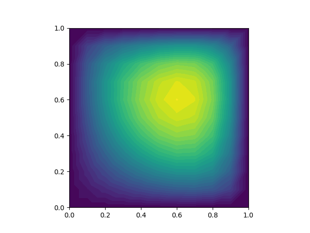

Fenics Kurulum, Sonlu Öğeler Metodu (Finite Elements Method)
Fenics FEM [1] yaklaşımının hesabı için sunulan bir kütüphanedir.
Kurulum surada [2] tarif ediliyor,
Ubuntu seviyesinde sunlari yapmak lazim,
sudo apt-get install libboost-all-dev petsc-dev
sudo apt-get install --no-install-recommends software-properties-common
sudo add-apt-repository ppa:fenics-packages/fenics
sudo apt-get update
sudo apt-get install --no-install-recommends fenics
Şimdi, kurulum bittikten sonra, hala bir problem var, Ubuntu
seviyesinde yapılan Python Fenics kurulumu sizin izole ortamınız
içinde görülmeyebilir. /usr/lib/python3/dist-packages altına
bakarsak mesela orada fenics, ffc gibi paketler var, bunlar izole
ortamımızda yok. Anlaşılır olabilir, apt-get kurulumu tüm sistem
için global bir kurulum, ve bu kurulum gidip global Python için
paketlerini kuruyor. Fakat izole Python ortamları ayrı dizinlerde,
kendi paketleri ile çalışıyorlar bildiğimiz gibi, en azından
daha önce yarattığımız bir izole ortam içinde bu yeni paketleri
bulamayabiliriz.
Sembolik bağlantı ile bunları halledebiliriz. Benim $HOME/Documents/env3/lib/python3.6/site-packages
ortamı için mesela, ve önce bazı ek hareketler,
pip install pkgconfig
pip install mpi4py
Şimdi kendi site-packages dizinimize gidip orada sembolik bağlantıları yaparız,
ln -s /usr/lib/python3/dist-packages/fenics .
ln -s /usr/lib/python3/dist-packages/dolfin.pth .
ln -s /usr/lib/python3/dist-packages/fenics_dijitso-2019.2.0.dev0.egg-info .
ln -s /usr/lib/python3/dist-packages/fenics_dolfin-2019.2.0.dev0.egg-info
ln -s /usr/lib/python3/dist-packages/fenics_dolfin-2019.2.0.dev0.egg-info .
ln -s /usr/lib/python3/dist-packages/fenics_ffc-2019.2.0.dev0.egg-info .
ln -s /usr/lib/python3/dist-packages/fenics_fiat-2019.2.0.dev0.egg-info .
ln -s /usr/lib/python3/dist-packages/fenics_ufl-2019.2.0.dev0.egg-info .
ln -s /usr/lib/python3/dist-packages/ffc .
Bu işleyecektir. Alttaki kodlarin çalışması lazım,
Hızlı bir izgara (mesh) yaratmak,
import fenics as fe
N1 = N2 = 75
mesh = fe.RectangleMesh(fe.Point(0, 0), fe.Point(1, 1), 10, 10)
fe.plot(mesh)
plt.savefig('fenics-mesh.png')

Daha çetrefil bir örnek,
import numpy as np
import matplotlib.pyplot as plt
def comparison_plot2D(
u, f,
value=0.5,
variation='y',
n=100,
tol=1E-8,
plottitle='',
filename='tmp',
):
v = np.linspace(-1+tol, 1-tol, n+1)
# Compute points along specified line:
points = np.array([(value, v_)
if variation == 'y' else (v_, value)
for v_ in v])
u_values = [u(point) for point in points] # eval. Function
f_values = [f(point) for point in points]
plt.figure()
plt.plot(v, u_values, 'r-', v, f_values, 'b--')
plt.legend(['u', 'f'], loc='upper left')
if variation == 'y':
plt.xlabel('y'); plt.ylabel('u, f')
else:
plt.xlabel('x'); plt.ylabel('u, f')
plt.title(plottitle)
plt.savefig(filename + '.png')
import fenics as fe
import sympy as sym
x, y = sym.symbols('x[0] x[1]')
def problem(f, nx=8, ny=8, degrees=[1,2]):
f = sym.printing.ccode(f)
f = fe.Expression(f, degree=2)
mesh = fe.RectangleMesh(
fe.Point(-1, 0), fe.Point(1, 2), 2, 2)
for degree in degrees:
if degree == 0:
# The P0 element is specified like this in FEniCS
V = fe.FunctionSpace(mesh, 'DG', 0)
else:
# The Lagrange Pd family of elements, d=1,2,3,...
V = fe.FunctionSpace(mesh, 'P', degree)
u = fe.project(f, V)
u_error = fe.errornorm(f, u, 'L2')
print('||u-f||=%g' % u_error, degree)
comparison_plot2D(
u, f,
n=50,
value=0.4, variation='x',
plottitle='Approximation by P%d elements' % degree,
filename='approx_fenics_by_P%d' % degree,
tol=1E-3)
#fe.plot(u, title='Approx by P%d' % degree)
if __name__ == '__main__':
f = 2*x*y - x**2
problem(f, nx=2, ny=2, degrees=[0, 1, 2])


Ornek
[3, sf. 267]'deki örneği altta görüyoruz,
import fenics as fe
mesh = fe.RectangleMesh(fe.Point(0, 0), fe.Point(1, 1), 10, 10)
V = fe.FunctionSpace(mesh, 'Lagrange', 1)
u = fe.TrialFunction(V)
v = fe.TestFunction(V)
a = fe.inner(fe.nabla_grad(u), fe.nabla_grad(v)) * fe.dx
f1 = fe.Constant(1.0)
L1 = f1 * v * fe.dx
f2 = fe.Expression("x[0]*x[0] + x[1]*x[1]", degree=2)
L2 = f2 * v * fe.dx
u0 = fe.Constant(0)
def u0_boundary(x, on_boundary):
return on_boundary
bc = fe.DirichletBC(V, u0, u0_boundary)
A = fe.assemble(a)
b = fe.assemble(L1)
bc.apply(A, b)
u_sol1 = fe.Function(V)
fe.solve(A, u_sol1.vector(), b)
fe.plot(u_sol1)
plt.savefig('fenics-sol1.png')
u_sol2 = fe.Function(V)
fe.solve(a == L2, u_sol2, bc)
fe.plot(u_sol2)
plt.savefig('fenics-sol2.png')

Kaynaklar
[1] https://burakbayramli.github.io/dersblog/compscieng/compscieng117/ders_1.17.html
[2] https://fenics.readthedocs.io/en/latest/installation.html
[3] Johansson, {\em Numerical Python}